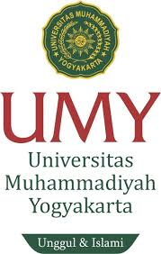

UMY merupakan universitas di jogja
UMY adalah singkatan dari Universitas Muhammadiyah Yogyakarta. Ini adalah perguruan tinggi swasta di Yogyakarta, Indonesia. UMY didirikan pada tahun 1981 dan merupakan bagian dari gerakan Muhammadiyah, organisasi Islam terbesar kedua di Indonesia. UMY menawarkan berbagai program studi di berbagai bidang, termasuk ilmu sosial, teknik, kedokteran, ekonomi, dan lainnya. Sebagai salah satu perguruan tinggi terkemuka di Indonesia, UMY terus berupaya meningkatkan kualitas pendidikan dan kontribusi terhadap masyarakat. 
UMY, didirikan pada tahun 1981 di Yogyakarta, Indonesia, merupakan institusi pendidikan tinggi yang memiliki akar kuat dalam nilai-nilai Islam dan juga kontribusi yang signifikan terhadap pendidikan dan masyarakat di Indonesia. Dengan visi menjadi universitas unggul yang berlandaskan pada nilai-nilai Islam dan moralitas universal, UMY telah berkomitmen untuk menyediakan pendidikan berkualitas, melakukan penelitian yang bermanfaat, dan berperan aktif dalam pengembangan masyarakat.
Sportorium
Sportorium UMY adalah fasilitas olahraga yang dimiliki oleh Universitas Muhammadiyah Yogyakarta (UMY). Sportorium adalah gabungan dari kata "sport" dan "auditorium", yang menunjukkan bahwa fasilitas ini tidak hanya digunakan untuk kegiatan olahraga, tetapi juga acara-acara seperti seminar, konser, dan pertunjukan lainnya.
Sportorium UMY adalah fasilitas olahraga yang dimiliki oleh Universitas Muhammadiyah Yogyakarta (UMY).
Sportorium adalah gabungan dari kata "sport" dan "auditorium",
ang menunjukkan bahwa fasilitas ini tidak hanya digunakan untuk kegiatan olahraga,
tetapi juga acara-acara seperti seminar, konser, dan pertunjukan lainnya.
.jpeg)